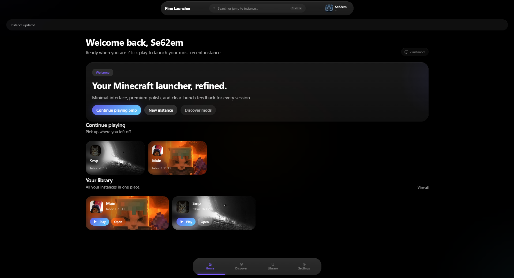

DebianDEB package
Open source · Windows & Linux
Your Minecraft setup, finally under control.
Instances, loaders, mods, worlds, Java, and backups—organized in one calm launcher that stays out of your way.
Get Pine LauncherLatest stable releasev1.2.9

SHA-256Checksums for every release
Shared cacheDownload common game files once
Five loadersVanilla, Fabric, Quilt, Forge, NeoForge
Open sourceTransparent by design
EVERYTHING IN ONE PLACE
A calmer way to play.
Pine takes care of the fiddly parts so your attention stays on the game.
Every world, neatly separated.
Keep versions, loaders, mods, saves, and settings isolated in clean instances.
NeoForge 47 modsVanilla 1.21.8Fabric+ 14 mods
Discover without leaving.
Find and install mods, resource packs, shaders, and modpacks through Modrinth.
⌕ Sodium Search
Download once. Reuse everywhere.
Pine keeps verified game assets, libraries, version files, and mods in shared caches. New instances reuse matching files instead of downloading everything from scratch.
DownloadShared cacheEvery instance
✓
Built in the open.
Every official installer includes a published SHA-256 checksum so you can verify the downloaded file before running it.
View the latest GitHub releaseSHA256VERIFIED RELEASES
Verified Pine releaseSHA-256 · PineLauncherSetup-x64.exe
Linux: apt install ./package.deb, dnf install ./package.rpm, or pacman -U ./package.pacman.
THE SHORT VERSION
Questions, answered.
The things worth knowing before Pine touches your Minecraft folder.
Is Pine Launcher free?
Yes. Pine is free and open source, with public code and checksums for official releases.
Which loaders does Pine support?
Vanilla, Fabric, Quilt, Forge, and NeoForge. Every instance keeps its own loader, mods, settings, and worlds.
Does Pine work on Linux?
Yes. Native DEB, RPM, and Pacman packages cover Debian, Ubuntu, Fedora, Nobara, Arch Linux, Manjaro, EndeavourOS, and related distributions.
Do I need to install Java myself?
No. Pine selects and manages the Java runtime required by each Minecraft version.
Can Pine import my existing launcher?
Yes. Pine can import existing instances while preserving worlds, mods, settings, and other gameplay data.
Why does Windows show “Unknown publisher”?
Pine is currently unsigned because trusted Windows signing certificates are paid products. You can verify the published SHA-256 checksum before running it.
OPEN SOURCE · COMMUNITY DRIVEN
Built in public. Better with people.
Inspect the code, report a rough edge, or hang out with the Pine community.
MADE BY A MINECRAFT PLAYER
se62em
I built Pine to make managing Minecraft instances feel simpler, cleaner, and more personal—not like maintaining a second operating system.